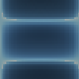
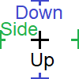
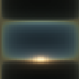
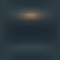
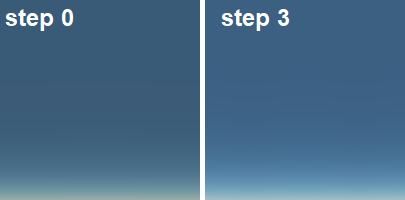
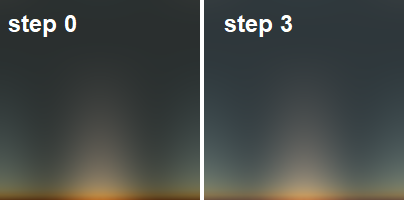

Real-time procedural sky rendering
Created on 2023, last updated on April 2024
This post demonstrates how a procedural sky can be rendered in real-time. I will describe some of the methods that I found relevant for my case, which is to render the sky being at low altitude and above the ocean. A naive implementation is firstly detailed, then the computation is gradually complexified to obtain a more convincing sky.
1. Atmospheric scattering

The sky color is due to the atmospheric scattering, that comes from the interaction of the particles in the atmosphere with the light. There are two main scattering types:
- the Rayleigh scattering that explains the blue color of the sky,
- the Mie scattering that makes the clouds visible.
The scattering effect is locally defined by a phase function, that expresses the ratio between the incoming and the outcoming light at a certain angle. It is assumed that the Rayleigh and Mie scatterings do not interfere, their effect is therefore additive. With \( h \) being the altitude and \( \theta \) the angle between the incoming and outcoming light direction, the scattering is computed as following: $$ \sigma(h,\theta) = \beta_R(h) \; \phi_R(\theta) + \beta_M(h) \; \phi_M(\theta) $$ where
- \( \beta_R(h) = \beta_{R0} \{ 0.11, 0.32, 0.68 \}_{rgb} \; e^{-h/h_{R0}} \) is the Rayleigh scattering strength,
- \( \beta_M(h) = \beta_{M0} \{ 0.5, 0.5, 0.5 \}_{rgb} \; e^{-h/h_{M0}} \) is the Mie scattering strength,
- \( \phi_R(\theta) = \frac{3}{16 \pi} \left( 1+\cos(\theta)^2 \right) \) is the Rayleigh phase function,
- \( \phi_M(\theta) = \frac{3}{8 \pi} \left( \frac{1 - g^2}{2 + g^2} \right) \frac{1+\cos(\theta)^2}{ \left( 1 + g^2 - 2 g \cos(\theta) \right) ^{ \frac{3}{2} }} \) is the Mie phase function.
It is admitted that \( h_{R0} = 8 \) km and \( h_{M0} = 1.2 \). Both \( \beta_{R0} \) and \( \beta_{M0} \) are coefficients that control the breadth of the scattering. The scattering induces a light extinction, which is the part of the light being scattered away when following a straight path: $$ \alpha(path) = \exp ( - d_{optic} ) $$ with $$ d_{optic} = \beta_{R0} \int_{path} { e^{-h/h_{R0}} dl } + \beta_{M0} \int_{path} { e^{-h/h_{M0}} dl } $$
2. Single scattering implementation

The single scattering is often detailed and implemented in online resources. It is quick to implement and it allows real-time rendering with a few tricks. The single scattering method consists in the discretization of the view ray in multiple points, and to sum the light being scattered at all of those points: $$ \overline{L} = L_{sun} \int_{P \in ray} { \alpha(V \rightarrow P) \; \alpha(P \rightarrow Sun) \; \sigma(P) \; dl } $$ where \( \alpha(path) \) is the light extinction along a straight path and \( \sigma(P) \) the scattering at the point P.
Extinction pre-computation:
The extinction is an integral that is costly to evaluate by summation.
To prevent this, many resources are using a pre-computed lookup texture.
Since the altitude of the viewer and the characteristic altitudes of the scattering effect are too negligeable compared
to the scale of the Earth's radius, I decided to use a math approximation for the extinction towards the sun.
I thus express the optical-distance to the sun with:
$$ d_{optic,sun} = \int_{P}^{Sun} { e^{-h/h0} dl }
\simeq \int_{x=0}^{+\infty} { e^{ - ( a x^2 + b x + c ) } dx }
= \frac{\sqrt{\pi}}{2\sqrt{a}} e^{-c} e^{\frac{b^2}{4a}} \left( 1 - \mathrm{erf} \left( \frac{b}{2\sqrt{a}} \right) \right) $$
where \( a = \frac{1-cos^2 \theta}{2 R h0} \) , \( b = \frac{cos \theta}{h0} \) , \( c = \frac{h_{start}}{h0} \) .
This approximation is fairly good while the ray does not travel towards the ground (while \(b\) is positive).
I also use asymptotic approximations of the erf function to have a friendlier expression to compute.
When \(b\) is negative, I consider that the ray starts at its lowest altitude point.
Finally, the optical distance to the sun is expressed with:
$$ d_{optic,sun} =
\begin{cases}
e^{-c} \frac{\sqrt{2 \pi R h0}}{2} e^{\frac{R \cos^2{\theta}}{h0}} \; \; \; \mathrm{ when } \; b < 0
\\
e^{-c} \frac{1}{b} \left(1 - \frac{2a}{b^2} + \frac{12a^2}{b^4} \right) \; \; \; \mathrm{ when } \; b > 7 \sqrt{a}
\\
e^{-c} \frac{\sqrt{\pi}}{2 \sqrt{a}} \left( 0.3480242 p - 0.0958798 p^2 + 0.7478556 p^3 \right) \; \; \; \mathrm{ with } \; \; \; p = \frac{2 \sqrt{a}}{2 \sqrt{a} + 0.47047 b}
\end{cases}
$$
Results:
This implementation of the sky scattering gives a plausible result with low effort, however the resulting sky isn't realistic enough. In short terms, at midday, the sky looks too dark compared with the horizon light's intensity. To increase the scattering strength may appear as a solution, but the sky will appear yellowed even at midday. The overall light intensity behaves weirdly, with a maximal intensity not at midday. The light intensity is lower on the sides, producing spurious pattern. This comes from the Rayleigh phase function. With Mie scattering, the horizon appears dark (not shown here). This is because the poor sampling of the Mie scattering effect, where the light is highly absorbed at low altitude. On the picture below, the sky is rendered with Rayleigh scattering only, from midday to sunset.

The shader code (click to expand).
uniform vec3 sunDirectionIncoming; uniform float factorRayleigh; uniform float factorMie; uniform float gMie; const float rE = 6.3e3f; // radius of Earth (km) const vec2 h0 = vec2(8., 1.2); // ch. altitude (Rayleigh, Mie) (km) const float hMax = 50.f; // max altitude for computations const int rayIntg_nsteps = 30; // nbr of integration points const float rayIntg_norm = 1.f / float(rayIntg_nsteps); const vec3 scatteringCoefs_R = vec3(0.11f, 0.32f, 0.68f); const vec3 scatteringCoefs_M = vec3(0.50f, 0.50f, 0.50f); vec3 localScatteringLight(float h, float c) { vec3 fR = exp(-h / h0.x) * scatteringCoefs_R * factorRayleigh; vec3 fM = exp(-h / h0.y) * scatteringCoefs_M * factorMie; float cc = c * c; float gg = gMie * gMie; float den = 1.f + gg - 2.f * c * gMie; float phaseR = 0.05968310365946075f * (1.f + cc); float phaseM = 0.1193662073189215f * (1.f - gg) * (1.f + cc) / (sqrt(den * den * den) * (2.f + gg)); return fR * phaseR + fM * phaseM; } vec2 opticalDistanceGroundToSun(float csz) { csz = max(0.f, csz); vec2 a = 0.5f * (1.f - csz * csz) / h0 / rE; vec2 b = csz / h0; vec2 sqrta = sqrt(a); vec2 ainvbb = a / (b * b); vec2 p = (2.f * sqrta) / (2.f * sqrta + 0.47047f * b); vec2 optInf = (1.f - 2.f*ainvbb + 12.f*ainvbb*ainvbb) / b; vec2 optMid = 0.5f * sqrt(3.141592f / a) * p * (0.3480242f - 0.0958798f * p + 0.7478556f * p * p); vec2 ret; ret.x = (b.x > 7.f * sqrta.x) ? optInf.x : optMid.x; ret.y = (b.y > 7.f * sqrta.y) ? optInf.y : optMid.y; return ret; } vec3 skyColor(vec3 rayView) { vec3 ray = vec3(rayView.xy, abs(rayView.z)); float cvz = max(rayView.z, 0.f); // cos view zenith float hMaxOverR = hMax / rE; float rayLength = rE * (sqrt(cvz*cvz + 2.f * hMaxOverR + hMaxOverR*hMaxOverR) - cvz); float step = rayLength * rayIntg_norm; float cosRS = dot(-sunDirectionIncoming, ray); // cos of angle between the ray and the sunlight vec3 lightAcc = vec3(0.f); vec2 optD_VP = vec2(0.f, 0.f); for (int iStep = 0; iStep < rayIntg_nsteps; ++iStep) { float x = (0.5f + float(iStep)) * step; vec3 pt = vec3(0.f, 0.f, rE) + x * ray; float rP = length(pt); float hP = rP - rE; // elevation float csz = clamp(dot(pt, -sunDirectionIncoming) / rP, -1.f, 1.f); vec2 optD_GroundSun = opticalDistanceGroundToSun(csz); vec2 rhoP = exp(-hP/h0); float cszNeg = min(0.f, csz); vec2 optD_PS = optD_GroundSun * exp(-(hP - cszNeg*cszNeg*rE)/h0); // direct scattering { vec3 globalOptD = (optD_VP.x + optD_PS.x) * scatteringCoefs_R * factorRayleigh + (optD_VP.y + optD_PS.y) * scatteringCoefs_M * factorMie; vec3 localScatteringPS = localScatteringLight(hP, cosRS); lightAcc += stepx * exp(-globalOptD) * localScatteringPS; } optD_VP += step * rhoP; } { float sunDisk = min(exp(6.e4f * (cosRS-0.999962f)), 1.f); // the sun-disk is 0.25 degree radius lightAcc += sunDisk * vec3(1.f, 1.f, 1.f); } return lightAcc; }
Impact of the number of discretized points:
I did some tests with various count of discretization points (rayIntg_nsteps).
Having less scattering points renders the sky as if the scattering coefficient was higher.
Indeed, it leads to a brighter and more uniform sky, but more yellowish near the horizon.
As expected, the number of discretization points strongly impacts the performances.

Two steps discretization with both Rayleigh and Mie scattering:

Because the Mie scattering has an 8-times lower characteristic altitude than the Rayleigh scattering characteristic altitude, the distribution of the discretization points significantly affects the output. To have a good sampling of the scattering, the distance between two points should be shorter than the characteristic altitude's one. Consequently, with the Mie scattering this distance should at most be about 1 km. As for the Rayleigh scattering, this distance should measure up to 8km, but given its magnitude in practice it can be higher while keeping a relatively high resolution. While keeping the reasonably low number of discretization points, I choose to split the view-ray in 2 parts: a first part with a short distance between 2 discretization points (so the Mie scattering will be accurately evaluated), and a second part with a long distance (so the Rayleigh scattering will be accurately evaluated).
3. Sky illumination with multiple atmospheric scattering
To improve the results, the indirect scattering needs to be taken into account. Badfully, methods based on ray-tracing would be too computationally intense to stay in real time. One of the possible methods is to model the entire atmosphere, and iteratively refine the atmosphere global illumination. This way, the indirect scattering will natively be taken into account.

The atmosphere modeling consists in partitioning the atmosphere into pieces. Each cell is defined by an altitude range and an angular range. Because that the Earth - Sun system has a radial symmetry, a cell is characterized only by its altitude and its angular position relatively on the sun direction. In fact, a single cell represents a whole ring defined by its altitude and the local sun elevation. Therefore, atmosphere model can be described in a 2D space.
Each cell would in turn receive and emit light. The light is emitted in all directions. I have modeled the emitted light with two contributions. The first is the scattering from the direct sun light. It is kept as an analytic expression. It is computed once because it is constant alongside the computations. The second is the scattering from the light emitted by the atmosphere. It is interpolated with some spherical harmonics. Finally, the emitted light by a cell is defined by: $$ L_{emit}(\vec{r}) = c_R \phi_R(\theta(\vec{r})) + c_M \phi_M(\theta(\vec{r})), g) + \sum_i c_i \psi_i(\vec{r})) $$ where \( \phi_R \) and \( \phi_M \) are the Rayleigh and Mie phase functions, \( c_R \), \( c_M \) the coefficients of the direct scattering, \( \psi_i \) the spherical harmonics, and \( c_i \) their coefficients. The computations looks like:
atmModel.reset();
for (cell in atmModel)
cell.emitDirect += scatterLight(receivedLightSun(), sunDirection());
for (int step = 0; step < 6; step += 1)
{
for (cell in atmModel)
{
cell.emitIndirect = 0;
for (direction in sphere)
cell.emitIndirect += scatterLight(atmModel.receivedLightFromCells(direction), direction);
}
}
These computations can be issued asynchronously on the CPU or on the GPU. Furthermore, the atmosphere global illumination does not depend on the sun elevation angle, so its computation won't be issued on every frame. In fact, it only depends on the atmosphere properties, which are:
- the Rayleigh scattering factor (
factorRayleigh) - the Mie scattering factor (
factorMie) - the Mie scattering forward-direction (
gMie)
Results:
|
|
Received light by the cell (without the direct sun light) |
Emitted light by the cell | Cell map |
|
Cell at the 45° sun-inclination, in the air, with Rayleigh scattering only |
 |
 |
|
|
Cell at the 0° sun-inclination, near the ground, with Rayleight and Mie scattering |
 |
 |
Sky-dome generation:
The sky dome illumination by ray-marching on the atmosphere cells. This process can be issued asynchronously too, and the real-time shader would just sample a sky map. The sky domes can be generated at any step for the atmosphere global illumination computation. Here 2 examples, generated from the step 0, taking account of the direct scattering only, and from the step 3, taking account of 3 levels of indirect scattering.
|
 |
 |
|
Sky dome at midday, with Rayleigh scattering |
Sky dome at sunset, with Rayleigh and Mie scattering |
I can observe that the indirect scattering does not contribute significantly to the sky illumination. It still improve the realism. Some work are planned in the future to improve the global feeling, without excluding to artificially exaggerate the amount of indirect scattering.
Sampling:

In the final aplication, the sky shader consists in sampling a sky dome map. Let define the sky dome coordinate:
- \( p \) is the pitch of the view ray (in blue), such that \( p = 0 \) at the horizon,
- \( y \) is the yaw of the view ray (in green), such that \( y = 0 \) at the sun direction,
- \( s \) is the sun zenith elevation (in red). such that \( s = 0 \) at noon.
The shader code folds into few lines of code:
uniform sampler2D skyLookUp;
uniform vec3 skyLookUpFactor;
const int skyLoopUpResolution = 24;
vec3 skyColor(vec3 ray)
{
float sP = abs(ray.z); // sin(p)
float cY = dot(-sunDirectionIncoming.xy, ray.xy) / (sqrt(1.f - sP*sP) + 1.e-6f); // cos(y)
// non-uniform sampling, based on resolution of 24x24 pixels:
vec2 uv = 0.021f + 0.958f * vec2(sP, 1.f - sqrt(0.5f * (1.f - cY)));
return skyLookUpFactor * texture(skyLookUp, uv).xyz;
}
Note that the sky-domes can be tabulated, based on multiple sky configurations (sun evelation, scattering parameters). For example, I decided to tabulate with 6 * 16 table-points when targeting mobile devices or web platform.
Sky-dome regression:
We can go a step further by fitting the sky-dome illumination in an arbitrary model, with only few coefficients. Finally, only few floats will have to be sent to the GPU shader. The GPU shader now needs to reconstruct the sky-dome illumination, with help of few arithmetic functions. Here a candidate model: $$ Color = k_0 + k_1 e^{-2 sin(p)} + k_2 e^{-10 sin(p)} + e^{-5 sin(p)} \left( k_3 cos(y) cos(p) + k_4 cos(y)^2 cos(p)^2 \right) + k_5 e^{5 \frac{s - 1}{1 - g}} $$
Work in progress ...
The shader code folds into few lines of code:
uniform vec3 skyCoefs[5];
vec3 skyColor(vec3 ray)
{
float sP = abs(ray.z);
float cYcP = dot(-sunDirectionIncoming.xy, ray.xy);
float cS = dot(-sunDirectionIncoming, ray);
float vpA = exp( -2.f*sP);
float vpB = exp(-10.f*sP);
float vpC = exp(- 5.f*sP);
vec3 color = skyCoefs[0] +
skyCoefs[1] * vpA +
skyCoefs[2] * vpB +
vpC * (skyCoefs[3] * cYcP + skyCoefs[4] * cYcP*cYcP);
return max(vec3(0.f, 0.f, 0.f), color);
}
4. Rendering of the clouds
The clouds are the visible effect of the scattering induced by the water droplets. Then we only need to consider the Mie scattering. I will use an even simpler scattering phase function: a constant value. Indeed, the multiple scattering tends to scatter the light like if a smoother the phase function was initially used. The scattered light is: $$ \sigma_{cloud}(\rho) = \frac{1}{4 \pi} \rho $$ where \( \rho \) is the local scattering strength, based on the cloud's particle density. The light extinction is computed the same way: $$ \alpha(path) = \exp \left( - \int_{path} { \rho dl } \right) $$ The clouds are generally localized in space, so a simple direct ray-cast method is enough to have convincing results. I use low-resolution 3D-textures to model the shape of the clouds, in combination of 3D-noise. On the texture, I can embed additional pre-computed geometry parameters, such as average optical-depth from an half-top-sphere and half-bottom-sphere.
Work in progress ...